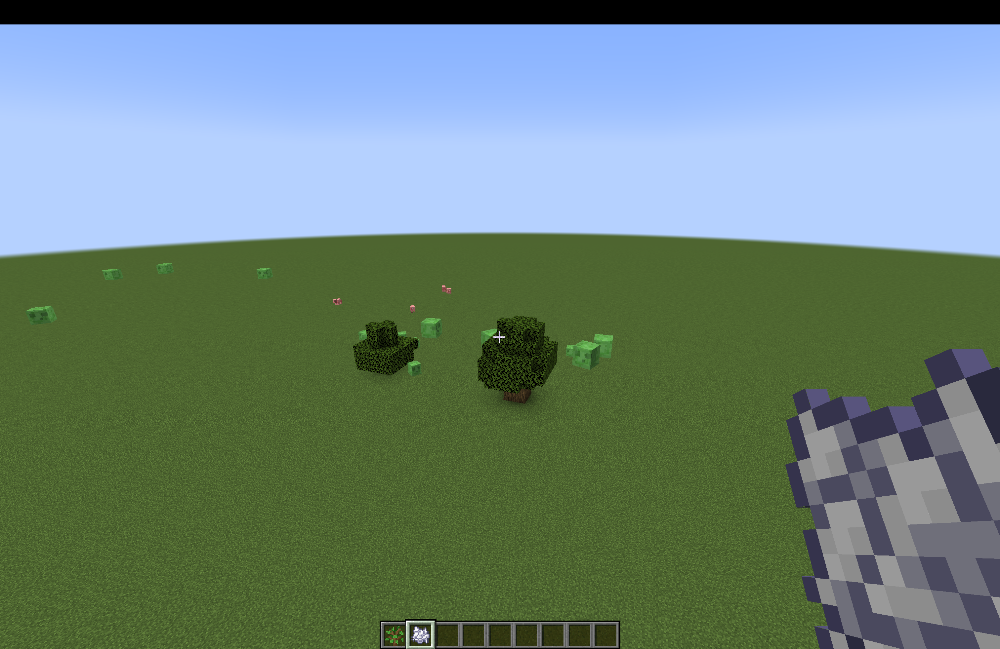
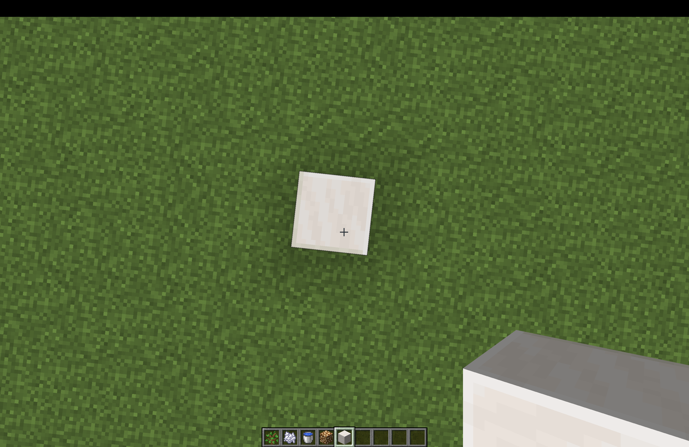
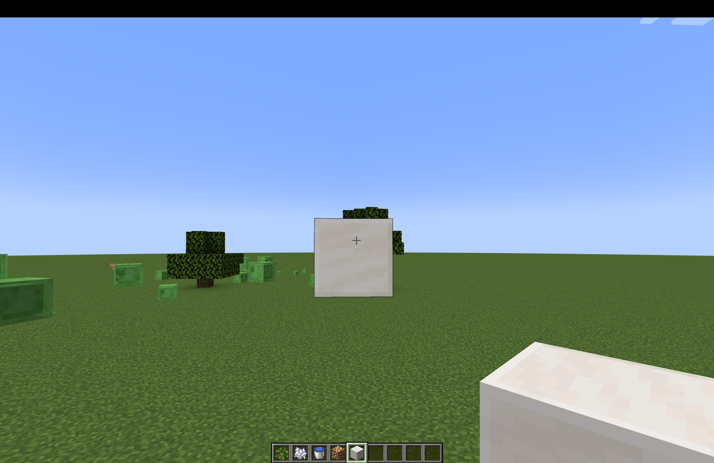

Currently, minecraft uses a simple lighting model. Each surface (block) will calculate its exposure to global light
sources
like the sun and point light sources (tources, lava, glowstone), and calculate its block color through summing up
all of its
light exposure and light colors and multiplying the base block texture.
|

|
| Uniform Hemisphere Sampling | Light Sampling |
|---|---|
|

|

|
1. Realistic Light Attenuation.
For sunlight, Minecraft uses linear light attenuation, which causes shaded surfaces to look much brighter than
reality.
We would like to make light falloff at an exponential rate. This can be achieved by squaring or cubing the sunlight
exposure value
of a block. If a block is in a area with less sunlight, we would like that area to be much darker than original
minecraft.
2. Lambertian Sunlight (directional Sunlight)
we would like to account for the angle at which an object receives sunlight. We simply take the dot product of the
nomral vector of the block
and the reverse direction of the sunlight. After this feature is implemented, outside a house, ceilings will look
much brighter compared to
walls.
3. Normal Mapped Shading
Add support for normal mapped shading with normal data read in from minecraft textures in the labpbr format.
4. Displacement Mapped Shading
Add support for displacement mapped shading with heighmap data red in from minecraft textures in the labpbr
format.
5. Terrain Shadows
Implement more realistic shadows cast by the sun due to blocks
6. Custom Light Reflective Property for blocks
We would like to have a custom reflective class for matt objects, partially reflective objects, and fully reflective
objects. This will allow us to implement reflective waters and partially reflective quartz countertops later on using
screen space reflections